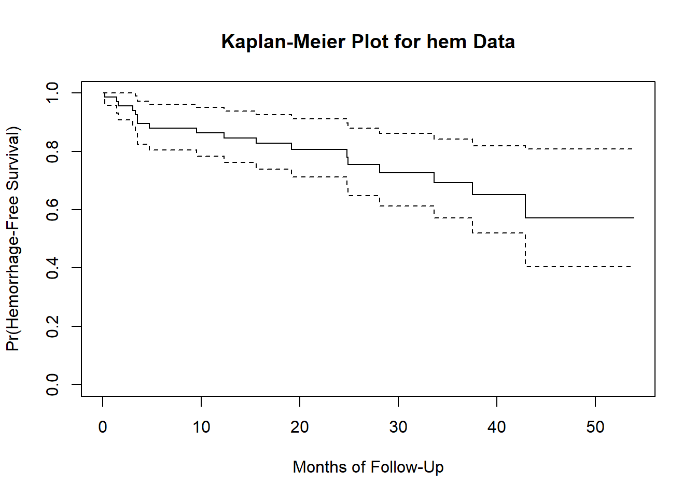
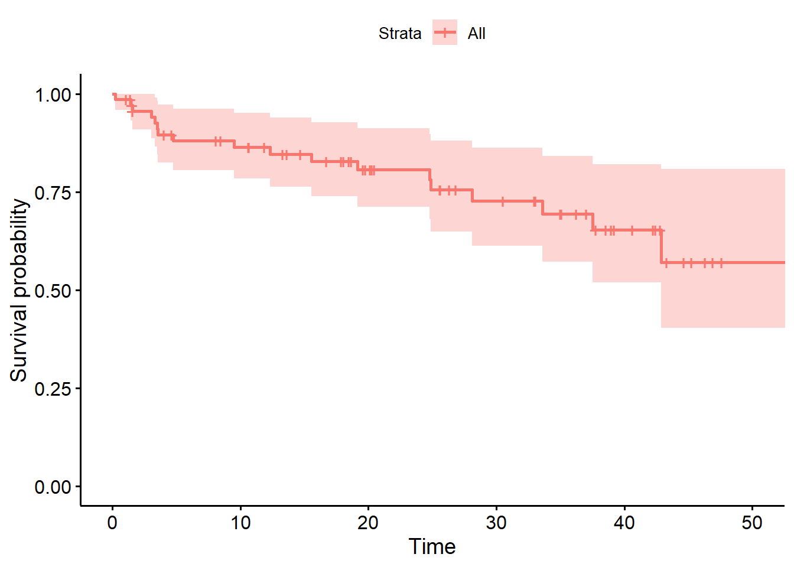
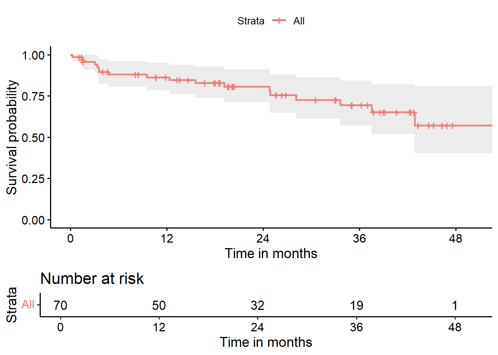
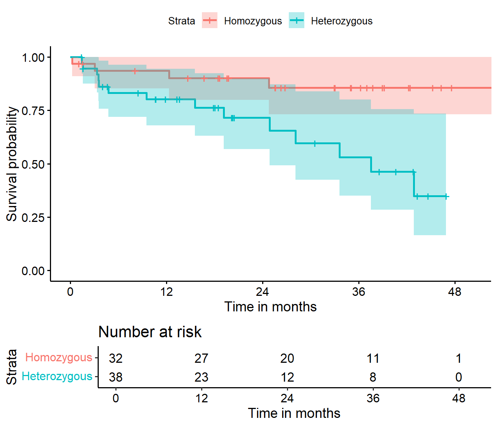
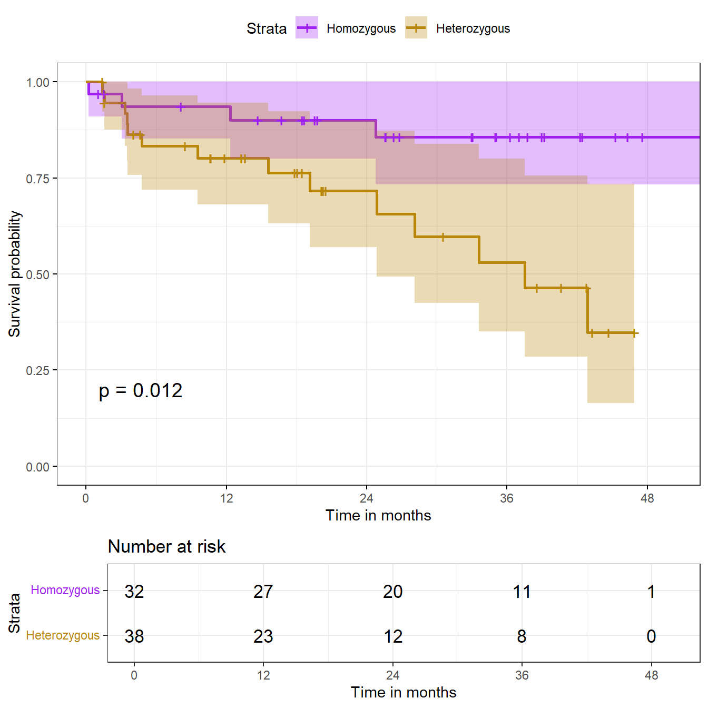
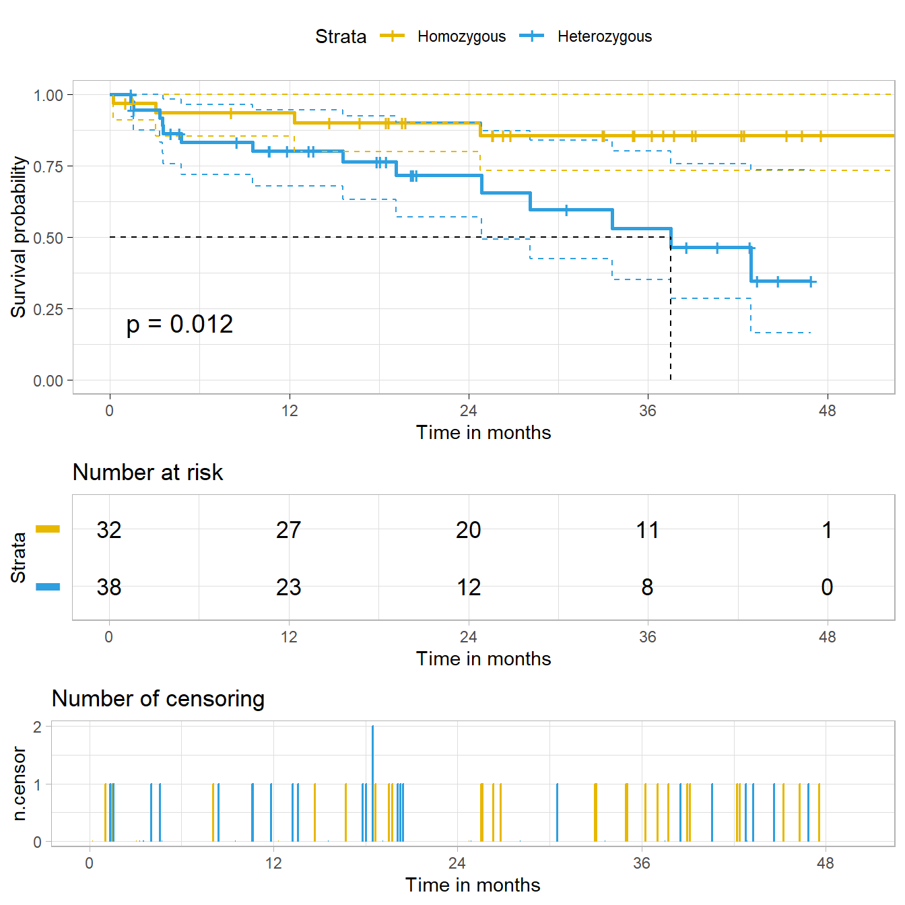
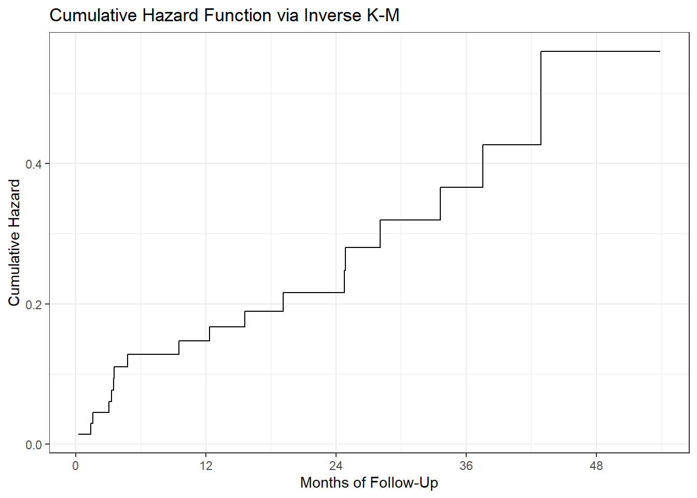
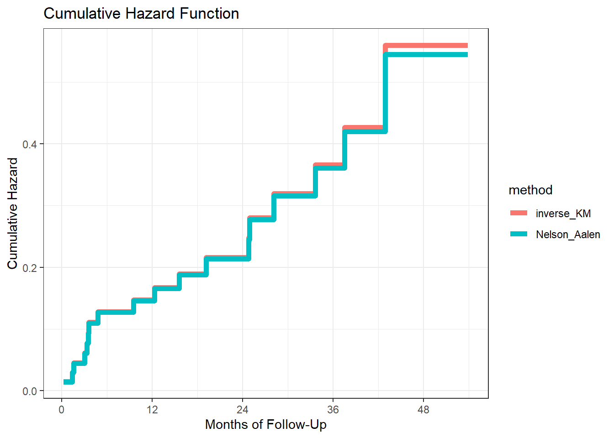
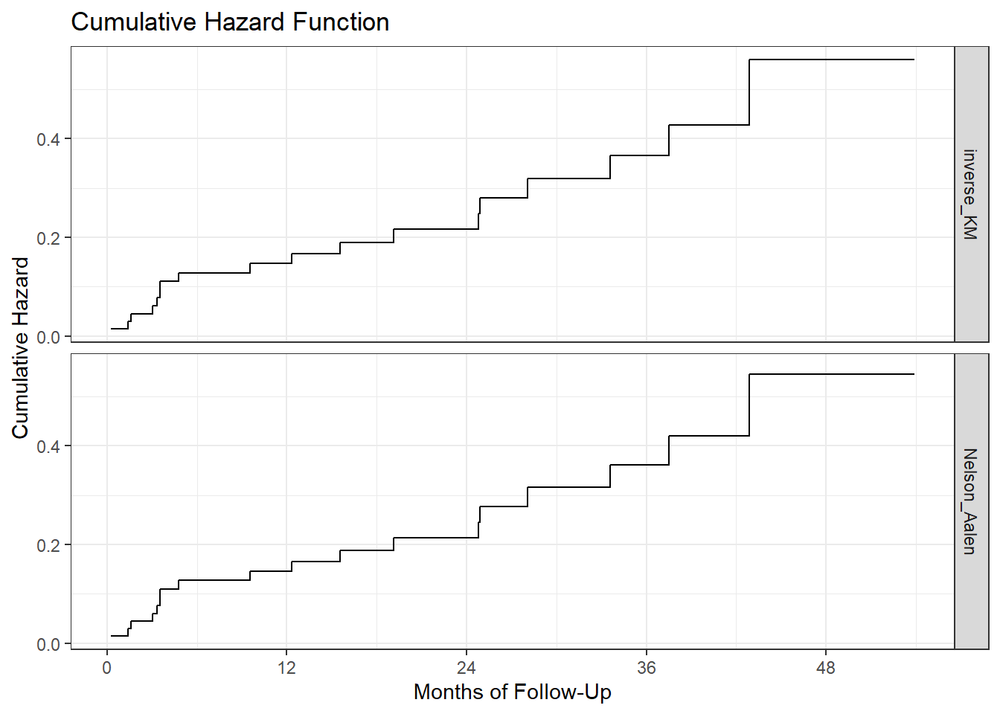

knitr::opts_chunk$set(comment = NA)
library(mosaic)
library(survival)
library(survminer)
library(tidyverse)
theme_set(theme_bw())29 Time To Event / Survival Data
In many medical studies, the main outcome variable is the time to the occurrence of a particular event.
- In a randomized controlled trial of cancer, for instance, surgery, radiation, and chemotherapy might be compared with respect to time from randomization and the start of therapy until death.
- In this case, the event of interest is the death of a patient, but in other situations it might be remission from a disease, relief from symptoms or the recurrence of a particular condition.
- Such observations are generally referred to by the generic term survival data even when the endpoint or event being considered is not death but something else.
These notes on survival analysis are just an introduction to the key ideas of the field. The PQHS department offers an entire course on survival analysis (PQHS 435) and I recommend that to those of you interested in deeper learning about the approaches we’ll discuss, or in learning more about other approaches to survival analysis.
The OpenIntro Statistics extra material on Survival Analysis in R, written by David Diez is a very useful guide to survival analysis in R, using the survival package and supplemented by the KMsurv and OIsurv packages. A PDF version of that material is available, along with a full set of the code used in that guide, along with instructions to obtain the packages.
29.1 R Setup Used Here
29.1.1 Data Load
hem <- read_csv("data/hem.csv", show_col_types = FALSE) 29.2 An Outline of Key Topics Discussed in these Notes
In this chapter, we tackle the building blocks of survival analysis, and use R to work with survival objects.
- The Survival Function, \(S(t)\)
- The Kaplan-Meier Estimate/Plot
- Comparing Survival Functions with log rank test
- The Hazard Function, \(H(t) = -log(S(t))\)
- Using
survivaland related packages in R
In the next chapter, we introduce the the Cox Proportional Hazards Regression Model, one of several available models for fitting regressions to time-to-event (survival) outcomes.
29.3 Foundations of Survival Analysis
Survival analysis is concerned with prospective studies, where we start with a cohort of subjects and follow them forwards in time to determine some clinical outcome. Follow-up continues until either some event of interest occurs, the study ends, or further observation becomes impossible.
The outcomes in a survival analysis consist of the subject’s fate and length of follow-up at the end of the study.
- For some patients, the outcome of interest may not occur during follow-up.
- For such patients, whose follow-up time is censored, we know only that this event did not occur while the patient was being followed. We do not know whether or not it will occur at some later time.
The primary problems with survival data are non-normality and censoring…
Survival data are quantitative, but not symmetrically distributed. They will often appear positively skewed, with a few people surviving a very long time compared with the majority; so assuming a normal distribution will not be reasonable.
At the completion of the study, some patients may not have reached the endpoint of interest (death, relapse, etc.). Consequently, the exact survival times are not known.
- All that is known is that the survival times are greater than the amount of time the individual has been in the study.
- The survival times of these individuals are said to be censored (precisely, they are right-censored).
29.3.1 The Survival Function, \(S(t)\)
The survival function, \(S(t)\) (sometimes called the survivor function) is the probability that the survival time, \(T\), is greater than or equal to a particular time, \(t\).
- \(S(t)\) = proportion of people surviving to time \(t\) or beyond
If there’s no censoring, the survival function is easy to estimate.
\[ \hat{S}(t) = \frac{\# \mbox{ of subjects with survival times } \geq t}{n} \]
but this won’t work if there is censoring.
29.3.2 Kaplan-Meier Estimator of the Survival Function
The survival function \(S(t)\) is the probability of surviving until at least time \(t\). It is essentially estimated by the number of patients alive at time \(t\) divided by the total number of study subjects remaining at that time.
The Kaplan-Meier estimator first orders the (unique) survival times from smallest to largest, then estimates the survival function at each unique survival time.
- The survival function at the second death time, \(t_{(2)}\) is equal to the estimated probability of not dying at time \(t_{(2)}\) conditional on the individual being still at risk at time \(t_{(2)}\).
In the presence of censoring, the survival function is estimated as follows.
- Order the survival times from smallest to largest, where t_{(j)} is the \(j\)th largest unique survival time, so we have…
\[ t_{(1)} \leq t_{(2)} \leq t_{(3)} \leq ... t_{(n)} \]
- The Kaplan-Meier estimate of the survival function is
\[ \hat{S}(t) = \prod_{j: t_{(j)} \leq t} (1 - \frac{d_j}{r_j}) \]
where \(r_j\) is the number of people at risk just before \(t_{(j)}\), including those censored at time \(t_{(j)}\), and \(d_j\) is the number of people who experience the event at time \(t_{(j)}\).
When we want to compare survival functions (or their Kaplan-Meier estimates, at least) we’ll use a log rank test or one of several extensions of that test.
29.3.3 Creating a Survival Object in R
To do survival analysis in R, we’re going to start with three main functions, all in the survival package:
Survcreates a survival objectsurvfitbuilds a Kaplan-Meier test, and the results may be plotted, as we’ve seen.survdiffbuilds a log rank test, that will let us compare two survival functions, as well as running several alternatives.
Plus, we’ll build out some estimates of the hazard function.
The Surv function, part of the survival package in R, will create a survival object from two arguments:
time= follow-up timeevent= a status indicator, where- event = 1 or TRUE means the event was observed (for instance, the patient died)
- event = 0 or FALSE means the follow-up time was censored
29.4 A First Example: Recurrent Lobar Intracerebral Hemorrhage
O’Donnell et al. (2000) studied the effect of the apolipoprotein E gene on the risk of recurrent lobar intracerebral hemorrhage in 70 patients who survived such a hemorrhage1. Patients in the study are classified by:
time= follow-up time, in monthsrecur= indicator of whether or not they had a recurrent event (1 = subject had a recurrence, 0 subject did not have a recurrence), andgenotype= the subject’s apolipoprotein E genotype (0 = Homozygous \(\epsilon3/\epsilon3\) and 1 = At least one \(\epsilon2\) or \(\epsilon4\) allele)
hem |> head(4)# A tibble: 4 × 4
id genotype time recur
<dbl> <dbl> <dbl> <dbl>
1 1 0 0.230 1
2 2 0 1.05 0
3 3 1 1.38 0
4 4 1 1.41 1table(hem$recur)
0 1
52 18 We have 70 patients at the start, and observe 18 events (rest are censored.)
favstats(time ~ recur, data = hem) recur min Q1 median Q3 max mean sd n
1 0 1.0513350 14.414783 23.01437 38.64477 53.88091 25.51129 14.68242 52
2 1 0.2299795 3.367556 10.92403 24.84600 42.87474 14.98517 13.88893 18
missing
1 0
2 0The median survival time looks like 23 weeks in the patients who do not exhibit a recurrence, but only 11 weeks in those who do.
29.5 Building a Survival Object
hemsurv <- Surv(time = hem$time, event = hem$recur)
head(hemsurv, 4)[1] 0.2299795 1.0513350+ 1.3798770+ 1.4127311 This object both displays the survival time for each subject, and indicates whether or not the subject’s follow-up was censored before a recurrent event occurred. Survival times with a + sign indicate censoring.
- Subject 1 lived for 0.23 months hemorrhage-free and then had a recurrence.
- Subject 2 lived for 1.05 months hemorrhage-free, at which point they were censored (perhaps because the study ended, or perhaps because the subject was no longer available for follow-up)
Remember that 18 of the subjects experienced a recurrent hemorrhage, and the other 52 are therefore censored.
29.6 Kaplan-Meier Estimate of the Survival Function
To build a Kaplan-Meier estimate of the survival function (to account properly for censoring), we take the survival object we have created, and use the survfit function from the survival package.
hemfit1 <- survfit(hemsurv ~ 1)We can look at the hemfit1 object directly, although the K-M estimate is usually plotted.
print(hemfit1, print.rmean=TRUE)Call: survfit(formula = hemsurv ~ 1)
n events rmean* se(rmean) median 0.95LCL 0.95UCL
[1,] 70 18 40.4 2.63 NA 42.9 NA
* restricted mean with upper limit = 53.9 We see that 18 events occurred out of a total of 70 subjects. The median survival time is listed as NA (missing) which implies it cannot be estimated by this simple model.
- This is because only 18 of our 70 subjects have a known recurrence-free survival time (the rest are censored), so we don’t actually know what the median survival time will be across our 70 subjects. Apparently, R can produce a lower bound on a 95% confidence interval for the median survival time, but not the actual point estimate.
We also observe a restricted mean survival time estimate. The restricted mean uses as its upper limit the largest observed or censored survival time, which here is a censored value: 53.9 months. So it is the mean survival time, assuming all censored subjects lived hemorrhage-free for 53.9 months.
summary(hemfit1)Call: survfit(formula = hemsurv ~ 1)
time n.risk n.event survival std.err lower 95% CI upper 95% CI
0.23 70 1 0.986 0.0142 0.958 1.000
1.41 67 1 0.971 0.0202 0.932 1.000
1.58 65 1 0.956 0.0248 0.909 1.000
3.06 63 1 0.941 0.0287 0.886 0.999
3.32 62 1 0.926 0.0320 0.865 0.991
3.52 61 1 0.911 0.0349 0.845 0.982
3.55 60 1 0.895 0.0375 0.825 0.972
4.76 57 1 0.880 0.0400 0.805 0.962
9.53 54 1 0.863 0.0424 0.784 0.951
12.32 50 1 0.846 0.0449 0.762 0.939
15.57 46 1 0.828 0.0476 0.740 0.926
19.15 38 1 0.806 0.0511 0.712 0.912
24.77 32 1 0.781 0.0553 0.679 0.897
24.87 31 1 0.756 0.0590 0.648 0.881
28.09 26 1 0.726 0.0635 0.612 0.862
33.61 22 1 0.693 0.0687 0.571 0.842
37.52 17 1 0.653 0.0758 0.520 0.819
42.87 8 1 0.571 0.1011 0.404 0.808This written summary provides us with lots of detail on the Kaplan-Meier estimate. In particular, the first two lines of this summary can be read to indicate the following.
- Up to time 0.23 months, no patients had a recurrence. Then, an event occurred, and the estimated survival (i.e. non-recurrence) probability is reduced from 1 to 0.986.
- By time 1.41 months, when the next event occurred, only 67 patients remained at risk. This is because one of them had a recurrent hemorrhage already (at 0.23 months) and two others had been right-censored. The estimated hemorrhage-free survival probability estimate starting at time 1.41 months is now 0.971.
A Kaplan-Meier plot graphically represents this summary.
29.6.1 The Kaplan-Meier Plot, using Base R
Now, let’s plot the Kaplan-Meier estimate, so we can see what is going on.
plot(hemfit1, ylab="Pr(Hemorrhage-Free Survival)",
xlab="Months of Follow-Up",
main="Kaplan-Meier Plot for hem Data")
The solid line indicates estimated hemorrhage-free survival probability. The dotted lines identify pointwise confidence intervals (default 95%).
- For example, we see that the estimated probability of hemorrhage-free survival to 20 months is estimated to be about 0.8
- The estimated probability of hemorrhage-free survival to 50 months is estimated to be about 0.6
The steps down indicate events (recurrences.) The estimated probability of survival to 0 months starts at 1, and drops down at each time point where an event (or more than one event) is observed.
29.6.2 Using survminer to draw survival curves
Another approach to plotting the Kaplan-Meier estimate comes from ggsurvplot, from the survminer package.
ggsurvplot(hemfit1, data = hem)
Again, the solid line indicates estimated hemorrhage-free survival probability. The crosses indicate censoring. The steps down indicate events (recurrences,) and the shading indicates (default 95%) pointwise confidence intervals. By pointwise confidence intervals, I mean that these bounds apply only to individual points in the time scale.
For more on an alternative approach, using simultaneous confidence bands, visit the OpenIntro Statistics Survival Analysis in R materials, written by David Diez, which are also posted on our web site.
29.6.3 A “Fancy” K-M Plot with a number at risk table
We can do a lot more with these plots. Following the suggestions at https://github.com/kassambara/survminer/ we can create the following…
ggsurvplot(hemfit1, data = hem,
conf.int = TRUE, # Add confidence interval
risk.table = TRUE, # Add risk table
xlab = "Time in months", # adjust X axis label
break.time.by = 12 # add tick every 12 months
)
This sort of plot is really designed to work best when we compare multiple groups in terms of their survival. So let’s do that.
29.7 Comparing Survival Across the Two Genotypes
Now, suppose we want to compare the hemorrhage-free survival functions for subjects classified by their apoliprotein E genotype. Working with the same survival object hemsurv we now run the survfit function to compare across the two genotype groups.
hemfit2 <- survfit(hemsurv ~ hem$genotype)
print(hemfit2, print.rmean=TRUE)Call: survfit(formula = hemsurv ~ hem$genotype)
n events rmean* se(rmean) median 0.95LCL 0.95UCL
hem$genotype=0 32 4 47.8 2.87 NA NA NA
hem$genotype=1 38 14 33.9 3.77 37.5 24.9 NA
* restricted mean with upper limit = 53.9 - In
genotype = 0(the subjects who are Homozygous \(\epsilon3/\epsilon3\),) we had 32 subjects, and observed 4 recurrent hemorrhages. Our estimated restricted mean survival time in those subjects is 44.8 months and we cannot estimate a median survival time because only a small fraction of our subjects were not censored. - In
genotype = 1(subjects who have at least one \(\epsilon2\) or \(\epsilon4\) allele,) we had 38 subjects and observed 14 recurrences. The estimated restricted mean survival time is 32.7 months in these subjects, and we can (it seems) estimate a median survival time in this group of 37.5 months. Note that we don’t actually need to observe the event in half of the subjects to estimate a median survival time.
29.7.1 Kaplan-Meier Survival Function Estimates, by Genotype
I find I have to crank the figure height in Quarto up to at least 6 to get the risk table to show up nicely in this setting.
ggsurvplot(hemfit2, data = hem,
conf.int = TRUE,
xlab = "Time in months",
break.time.by = 12,
legend.labs = c("Homozygous", "Heterozygous"),
risk.table = TRUE,
risk.table.height = 0.25
)
It appears that patients who were homozygous for the \(\epsilon3\) allele of this gene (i.e. genotype = 0 in the hemorrhage data) had a much better prognosis than others (genotype = 1.)
29.8 Testing the difference between two survival curves
To obtain a significance test comparing these two survival curves, we turn to a log rank test, which tests the null hypothesis \(H_0: S_1(t) = S_2(t)\) for all \(t\) where the two exposures have survival functions \(S_1(t)\) and \(S_2(t)\). We use the survdiff function to explore this test, which uses a \(\chi^2\) statistic to do the testing.
survdiff(hemsurv ~ hem$genotype)Call:
survdiff(formula = hemsurv ~ hem$genotype)
N Observed Expected (O-E)^2/E (O-E)^2/V
hem$genotype=0 32 4 9.28 3.00 6.28
hem$genotype=1 38 14 8.72 3.19 6.28
Chisq= 6.3 on 1 degrees of freedom, p= 0.01 Based on the log rank test, we conclude that there is a statistically significant difference (\(p\) = .0122) between the hemorrhage-free survival curves for the two genotypes, as shown in the Kaplan-Meier plot.
- The log rank test generalizes to permit survival comparisons across more than two groups, with the test statistic having an asymptotic chi-squared distribution with one degree of freedom less than the number of patient groups being compared.
29.8.1 Alternative log rank tests
An alternative approach to testing is the Peto and Peto modification of the Gehan-Wilcoxon test, which results from adding rho=1 to the survdiff function (rho=0, the default, yields the log rank test.)
survdiff(hemsurv ~ hem$genotype, rho=1)Call:
survdiff(formula = hemsurv ~ hem$genotype, rho = 1)
N Observed Expected (O-E)^2/E (O-E)^2/V
hem$genotype=0 32 3.63 7.87 2.29 5.46
hem$genotype=1 38 11.79 7.54 2.39 5.46
Chisq= 5.5 on 1 degrees of freedom, p= 0.02 As compared to the log rank test, this Peto-Peto modification (and others using rho > 0) give greater weight to the left hand (earlier) side of the survival curves.
- To obtain chi-square tests that give greater weight to the right hand (later) side of the survival curves than the log rank test, use a
rhovalue which is less than 0.
29.9 A “Fancy” K-M Plot with a number at risk table
We can add the log rank test result to our “fancy” K-M plot. Visit https://github.com/kassambara/survminer/ for more options.
ggsurvplot(hemfit2, data = hem, size = 1,
palette = c("purple", "darkgoldenrod"), # custom colors
conf.int = TRUE, # Add confidence interval
pval = TRUE, # Add p-value
risk.table = TRUE, # Add risk table
risk.table.height = 0.25, # change if you have >2 groups
risk.table.y.text.col = T, # show colors in table listing
xlab = "Time in months", # adjust X axis label
break.time.by = 12, # break X axis in time intervals
legend.labs = c("Homozygous", "Heterozygous"), # labels
ggtheme = theme_bw() # Change ggplot2 theme
)
29.9.1 Customizing the Kaplan-Meier Plot Presentation Further
We can even add a plot of the number of censored subjects at each time point, as well as a median survival pointer (which, of course, we’ve seen that we can’t estimate in one of the groups), and customize the style of the confidence intervals. Again, see https://github.com/kassambara/survminer/ for even more customized results.
ggsurvplot(hemfit2,
data = hem,
palette = c("#E7B800", "#2E9FDF"),
risk.table = TRUE,
pval = TRUE,
conf.int = TRUE,
xlab = "Time in months",
break.time.by = 12,
ggtheme = theme_light(),
risk.table.y.text.col = T,
risk.table.height = 0.25,
risk.table.y.text = FALSE,
ncensor.plot = TRUE,
ncensor.plot.height = 0.25,
conf.int.style = "step",
surv.median.line = "hv",
legend.labs = c("Homozygous", "Heterozygous")
)
29.10 The Hazard Function
To build regression models for time-to-event data, we will need to introduce the hazard function. Consider a subject in the hemorrhage study who has a hemorrhage-free survival time of 9 months.
- For this subject to have had a recurrent hemorrhage at 9 months, they had to be hemorrhage-free for the first 8 months.
- The subject’s hazard at 9 months is the failure rate “per month” conditional on the subject being hemorrhage-free for the first 8 months.
If \(S(t)\) is the survival function, and time \(t\) is taken to be continuous, then \(S(t) = e^{H(t)}\) defines the hazard function \(H(t)\).
- Note that \(H(t)\) = \(-ln(S(t))\).
- The function \(H(t)\) is an important analytic tool.
- It’s used to describe the concept of the risk of “failure” in an interval after time \(t\), conditioned on the subject having survived to time \(t\).
- It’s often called the cumulative hazard function, to emphasize the fact that its value is the “sum” of the hazard up to time \(t\).
There are several different methods to estimate \(H(t)\), but we’ll focus on two…
- The inverse Kaplan-Meier estimator
- The Nelson-Aalen estimator
29.10.1 The Inverse Kaplan-Meier Estimator of \(H(t)\)
Our first estimator of the hazard function, \(H(t)\) will be the inverse Kaplan-Meier estimate, which I’ll place in an R object called H_est1.
- To start, we will take the negative of the log of the Kaplan-Meier survival estimate. That takes care of the first t-1 levels of the eventual estimate.
- To complete the process, we will repeat the final one of those time-specific estimates at the end.
H_est1 <- -log(hemfit1$surv)
H_est1 <- c(H_est1, tail(H_est1, 1))Here are the first five, and last five values of the hazard function estimate.
head(H_est1,5) # first 5 values[1] 0.01438874 0.01438874 0.01438874 0.02942661 0.02942661tail(H_est1, 5) # last 5[1] 0.5602049 0.5602049 0.5602049 0.5602049 0.5602049We can create a little tibble containing the times and hazard estimates, like this:
haz_hem <- tibble(
time = c(hemfit1$time, tail(hemfit1$time, 1)),
inverse_KM = H_est1
)29.10.2 Cumulative Hazard Function from Inverse K-M
Since we’ve built the data set of times and hazard values, we can use the geom_step function in ggplot2.
ggplot(haz_hem, aes(x = time, y = inverse_KM)) +
geom_step() +
scale_x_continuous(breaks = c(0, 12, 24, 36, 48)) +
labs(x = "Months of Follow-Up",
y = "Cumulative Hazard",
title = "Cumulative Hazard Function via Inverse K-M")
29.10.3 The Nelson-Aalen Estimator of \(H(t)\)
An alternative estimate of the cumulative hazard is called the Nelson-Aalen estimate, captured here in H_est2.
h_st <- hemfit1$n.event / hemfit1$n.risk
H_est2 <- cumsum(h_st)
H_est2 <- c(H_est2, tail(H_est2, 1))
haz_hem$Nelson_Aalen <- H_est2
head(haz_hem)# A tibble: 6 × 3
time inverse_KM Nelson_Aalen
<dbl> <dbl> <dbl>
1 0.230 0.0144 0.0143
2 1.05 0.0144 0.0143
3 1.38 0.0144 0.0143
4 1.41 0.0294 0.0292
5 1.51 0.0294 0.0292
6 1.58 0.0449 0.044629.10.4 Convert Wide Data to Long
In order to easily plot the two hazard function estimates in the same graph, we’ll want to convert these data from wide format to long format, with the pivot_longer function.
haz_hem_comp <- pivot_longer(data = haz_hem, cols = 2:3,
names_to = "method", values_to = "hazardest")
head(haz_hem_comp)# A tibble: 6 × 3
time method hazardest
<dbl> <chr> <dbl>
1 0.230 inverse_KM 0.0144
2 0.230 Nelson_Aalen 0.0143
3 1.05 inverse_KM 0.0144
4 1.05 Nelson_Aalen 0.0143
5 1.38 inverse_KM 0.0144
6 1.38 Nelson_Aalen 0.014329.10.5 Plot Comparison of Hazard Estimates
ggplot(haz_hem_comp, aes(x = time, y = hazardest,
col = method)) +
geom_step(linewidth = 2) +
scale_x_continuous(breaks = c(0, 12, 24, 36, 48)) +
labs(x = "Months of Follow-Up",
y = "Cumulative Hazard",
title = "Cumulative Hazard Function") +
theme_bw()
We can see that the two cumulative hazard function estimates are nearly identical in this case. We could instead compare the two functions in faceted plots, if that would be helpful.
ggplot(haz_hem_comp, aes(x = time, y = hazardest)) +
geom_step() +
scale_x_continuous(breaks = c(0, 12, 24, 36, 48)) +
labs(x = "Months of Follow-Up",
y = "Cumulative Hazard",
title = "Cumulative Hazard Function") +
facet_grid(method ~ .) + theme_bw()
Next, we will consider the issue of modeling a survival outcome using Cox proportional hazards regression.
These data come from Dupont WD (2002) Statistical Modeling for Biomedical Researchers. New York: Cambridge U. Press, section 6.4.↩︎